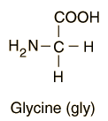

Amino Acids with Hydrocarbon R-groups
Amino acids are organic compounds which contain both an amino group and a carboxyl group. They are distinguished by the attached functional group R.
 |
Of the twenty amino acids that make up proteins, six of them have hydrocarbon R-groups . The simplest of the amino acids, glycine, has just a hydrogen atom in the position of the R-group. |  |
* Amino acids which are essential amino acids which cannot be made by the human body and, therefore, must be obtained in the diet.
Biochemical concepts
Chemistry concepts
Reference
Tillery, Enger and Ross
Ch 14
| HyperPhysics*****Chemistry | R Nave |